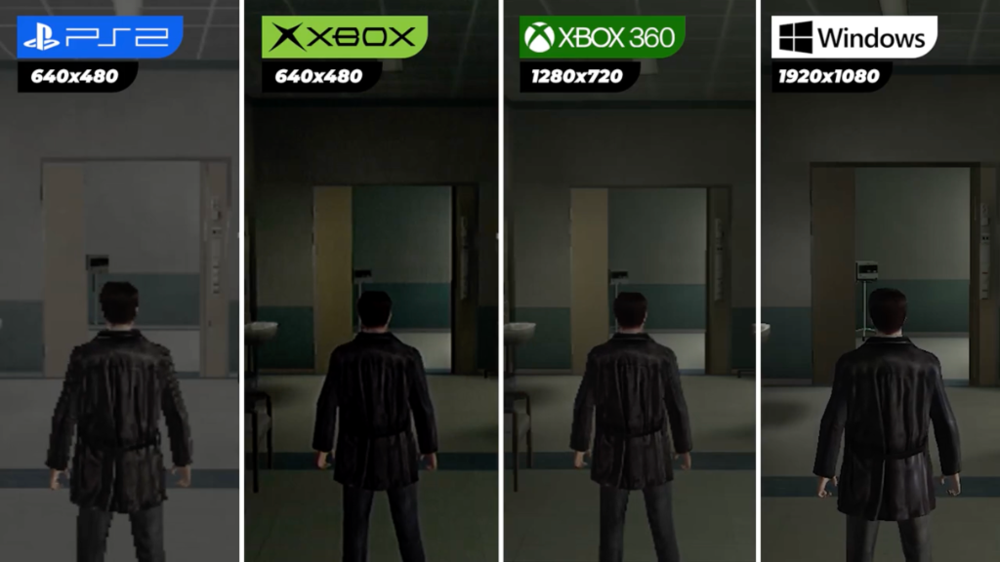

Max Payne 2 was my introduction to Rockstar Games. Coming from film and animation, I wanted to get into the games industry and QA was my way in.
This was a brief but formative role where I learned the fundamentals of game testing and bug reporting. It gave me insight into how AAA games are polished and shipped. More importantly, it was the start of my journey at Rockstar, leading directly to becoming a game designer on Bully.
Working on Max Payne 2's console versions taught me the importance of attention to detail and thorough testing—skills that would serve me throughout my design career.
We had to run through all different versions of the game in multiple languages. The PS2 version was particularly rough and many compromises had to be made to get it running on that platform.

Key Contributions
- Performed quality assurance testing for console versions
- Filed and tracked bugs through the development process
- Gained foundational knowledge of AAA game development
- Transitioned from QA to game design role on Bully